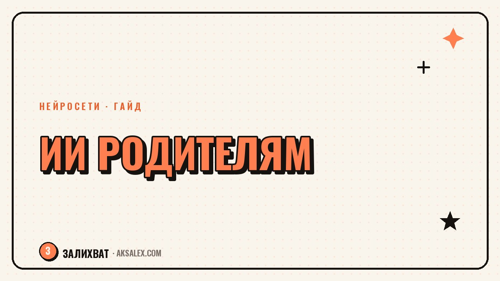

Нейросети для родителей: советы по воспитанию

В три часа ночи с кричащим трёхлеткой на руках звонить психологу не станешь, а вот открыть чат с нейросетью и спросить «что делать с истерикой перед сном» - вполне. Нейросеть не воспитывает ребёнка за тебя и не ставит диагнозы, но умеет быстро разложить типичную возрастную ситуацию по шагам и подсказать формулировки для трудного разговора, когда своих слов в моменте не находится.
Для каких ситуаций нейросеть реально помогает
Лучше всего ИИ работает там, где нужна не диагностика, а структура: как объяснить ребёнку смерть бабушкиного кота, как подготовиться к разговору про переезд в новую школу, какими словами описать развод так, чтобы не напугать пятилетку. Нейросеть не знает твоего ребёнка, но знает возрастную психологию в общих чертах и может предложить рабочий черновик фразы, который ты подкорректируешь под свою семью.
Примеры удачных запросов
- Как объяснить четырёхлетнему ребёнку, почему папа теперь живёт отдельно
- Какие слова использовать, когда ребёнок боится идти в садик после долгих каникул
- Как отличить обычное упрямство трёхлетки от сигнала, что ему тяжело
- Что говорить вместо «не плачь», когда ребёнок расстроен из-за проигрыша в игре
Как сформулировать запрос, чтобы получить рабочий ответ
Вопрос «как воспитать ребёнка правильно» ничего не даст - слишком общий, нейросеть выдаст пересказ статьи из интернета. Работает конкретика: возраст ребёнка, что именно произошло, что ты уже пробовал и не сработало. Фраза «сыну 6 лет, он бьёт младшую сестру, когда злится, обычные разговоры не помогают» получит в разы более полезный ответ, чем абстрактный запрос про агрессию у детей.
Полезно также просить нейросеть не один совет, а три разных варианта действий с объяснением, почему они работают по-разному. Так видно логику, а не только готовый рецепт, который может не подойти твоей семье.
Где ИИ полезен, а где лучше сразу идти к специалисту
| Ситуация | Можно спросить у ИИ | Нужен специалист |
|---|---|---|
| Истерики 2-4 лет, вспышки упрямства | Да, возрастная норма, есть рабочие приёмы | Если истерики длятся часами ежедневно |
| Подготовка к разговору о разводе, смерти | Да, черновик формулировок | Если ребёнок месяцами не может прийти в себя |
| Трудности с засыпанием, режимом дня | Да, типовые схемы режима | Если проблема длится годами без причины |
| Подозрение на задержку речи или развития | Только общая информация | Обязательно очно к специалисту |
| Самоповреждение, устойчивая тревога ребёнка | Нет, это не зона ИИ | Срочно к детскому психологу или психиатру |
Трудные разговоры: как нейросеть помогает подготовиться
Перед сложным разговором полезно попросить нейросеть сыграть роль ребёнка и ответить на твою заготовленную фразу - так сразу видно, где формулировка звучит обвиняюще или слишком сложно для возраста. Это не тренажёр эмпатии, а способ заранее услышать свои слова со стороны, прежде чем произносить их в реальности.
Нейросеть не знает твоего ребёнка и не видит его лица. Она может дать структуру разговора, но прочитать момент, когда лучше замолчать и обнять, может только родитель.
Короткий план для сложного разговора
- Попроси нейросеть набросать 3-4 ключевые фразы на тему разговора
- Прочитай их вслух сама и убери всё, что звучит неестественно для твоей речи
- Подготовь ответ на самый неудобный вопрос, который ребёнок может задать
- Оставь паузу в разговоре - не обязательно сказать всё за один раз
Чего нейросеть точно не умеет в воспитании
ИИ не видит интонацию, мимику и контекст отношений в семье, поэтому любой совет - это усреднённая схема, а не диагноз конкретного ребёнка. Если поведение сильно отличается от возрастной нормы дольше месяца, если в семье произошла травма или ребёнок говорит о нежелании жить - это повод идти к специалисту очно, а не продолжать переписку с чат-ботом.
Вторая ловушка - искать в ответах ИИ подтверждение того, что ты и так решила сделать. Полезнее спрашивать нейросеть о том, что смущает или непонятно, а не использовать её как способ переложить ответственность за решение на алгоритм.
Частые вопросы
Можно ли доверять нейросети советы по воспитанию детей?
Можно - как отправной точке для типичных возрастных ситуаций, но не как готовому диагнозу или замене специалиста. ИИ хорош для структурирования разговора и возрастной нормы, а решения про конкретного ребёнка всё равно принимает родитель.
Какую нейросеть лучше использовать для вопросов про воспитание?
Подойдёт любой текстовый ассистент, важнее не название сервиса, а то, как ты формулируешь запрос. Чем конкретнее описана ситуация - возраст, что произошло, что уже пробовали - тем полезнее будет ответ.
Как объяснить ребёнку сложную тему с помощью нейросети?
Попроси у ИИ несколько вариантов формулировок под возраст ребёнка, прочитай их вслух и адаптируй под свою речь. Готовый текст нейросети звучит правильно на бумаге, но часто слишком гладко для живого разговора.
Когда стоит перестать спрашивать нейросеть и идти к детскому психологу?
Если проблема повторяется больше месяца, если поведение сильно отличается от возрастной нормы или если речь идёт о тревожных сигналах вроде самоповреждения - это повод обратиться к специалисту очно, а не продолжать искать совет у ИИ.
Не станет ли ребёнок зависимым от того, что родитель всё решает через ИИ?
Риск не в самой нейросети, а в привычке искать внешнее подтверждение вместо собственного решения. Если ИИ используется как черновик для размышлений, а финальное решение всё равно принимает родитель, зависимости не возникает.
Раз тема оказалась полезной, вот что почитать следующим. Как использовать нейросети, чтобы помочь ребёнку выбрать профессию и вуз без давления и угадывания.
Читать статью →а не вручную